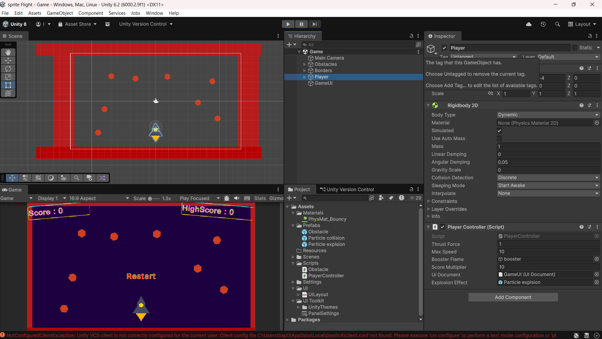

Veille sur projet personnelle
Thème : Développement 2D avec Unity 6 – Projet "Sprite Flight"
Dans le cadre de ma formation en BTS SIO SLAM et de mon intérêt pour le game dev, j'ai suivi le tutoriel officiel Unity Learn "2D Beginner Game: Sprite Flight" (mis à jour pour Unity 6 en 2025–2026).
Il s'agit d'un mini-jeu arcade 2D où l'on contrôle un vaisseau triangulaire qui doit esquiver des obstacles volants (style asteroid dodge).

Capture de mon projet Sprite Flight dans Unity 6 – Vaisseau contrôlé à la souris, obstacles, score, explosion de particules et UI simple.
Points clés du tutoriel et de Unity 6 en 2D (veille mars 2026)
- Workflow 2D amélioré : Unity 6 renforce les outils 2D (Sprite Editor, Tilemap, Physics 2D optimisée). RigidBody2D reste central pour les mouvements dynamiques (AddForce pour propulsion, comme dans mon vaisseau).
- Changements RigidBody2D : velocity est obsolète → remplacé par linearVelocity (avec linearVelocityX/Y). J'ai dû adapter mon script PlayerController pour Unity 6.
- Particules & VFX : Système de particules intégré pour l'explosion et la traînée du booster (facile à paramétrer dans Unity 6).
- UI Toolkit : Utilisé pour le score et le highscore (plus moderne que l'ancien uGUI pour des interfaces simples).
- Performance & Mobile : Unity 6 optimise mieux le 2D pour WebGL et mobile (important si je veux publier sur itch.io ou Play Store plus tard).
Ce que j'en retiens pour mon avenir pro
Ce projet m'a permis de consolider :
- Les bases de la physique 2D (RigidBody2D + forces)
- La gestion d'input (Input System ou legacy Input)
- Les collisions et triggers (OnCollisionEnter2D)
- UI dynamique et score persistant
Sources principales :
→ Tutoriel officiel Unity Learn : 2D Beginner Game: Sprite Flight (Unity 6)
→ Release notes Unity 6 : Améliorations 2D Physics & RigidBody2D (linearVelocity, etc.)
→ Discussions Unity Forums & Reddit (2025–2026) sur migration RigidBody2D